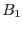
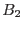
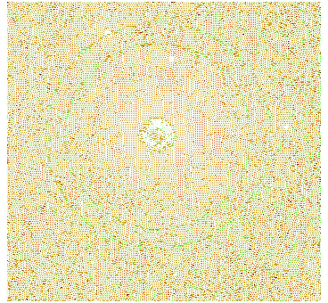
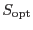

The second and third methods of calculating the scaling factor (mode=2 and mode=3) are auxiliary and might be used in some difficult cases when the input image is contaminated by a multitude of other scattered light features (like, ``huge deformed donuts'', smoke rings, modulo-8 pattern around bright sources, etc.).
These algorithms use two annular regions (instead of a single region, as in the case of the mode 1): the larger one is the same as in the case of the mode-1 algorithm and is used for finding the background levels of the input () and the calibrated () images.
|  |
The smaller region (see Fig.4)
corresponds to the known sizes of the ``donut'' of the central
scattered light feature. The count numbers within this region
( for the input image and  for the calibrated image)
are found by building histograms of the pixel values, as
described in Sec.8.1.
for the calibrated image)
are found by building histograms of the pixel values, as
described in Sec.8.1.
Then, in the case of the mode-2 algorithm, the calibration
scaling factor is computed as
In the case of mode=3 the latter subtraction is made for
the scaling factor varied (in a loop) with small steps (of 0.02)
from the values 0.2 to 2.8. The optimal scaling factor
() is then assumed to correspond to the minimum
of the absolute value of the difference between the background
and the number of counts within the smaller annulus.
The final output image will then be: